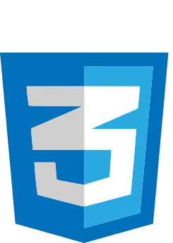
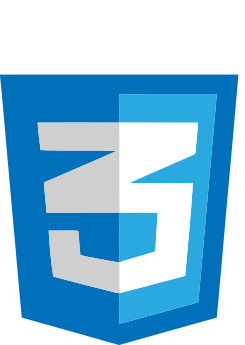
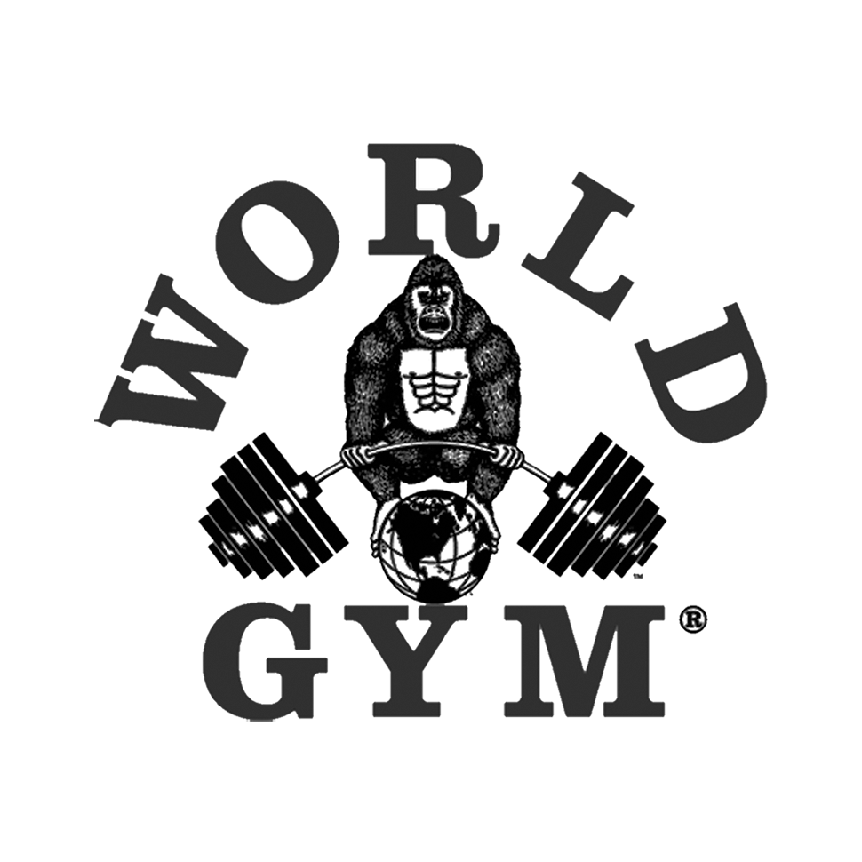

Programación
Desde pequeño me ha apasionado la informática y la programación. He tocado varios lenguajes de programación, entre ellos C++, HTML, CSS, ensamblador. Me gustaría seguir aprendiendo y aumentar mis conocimientos, sobre todo en aquellos destinados al diseño web.
 


Deporte
El deporte es algo que siempre ha estado presente en mi vida. He practicado varios, como baloncesto, boxeo, fútbol, natación... Mi favorito siempre ha sido el boxeo, es un deporte muy completo y mucho más noble e inocente de lo que la gente piensa. Actualmente el único tipo de ejercicio que hago es ir al gimnasio, dado que no tengo tiempo de más.

Tecnología
Siempre me ha interesado la tecnología, desde pequeño tenía curiosidad por cualquier aparato digital, por saber cómo funcionaba y cómo estaba estructurado. En concreto, el mundo de los smartphones y las consolas me apasiona.